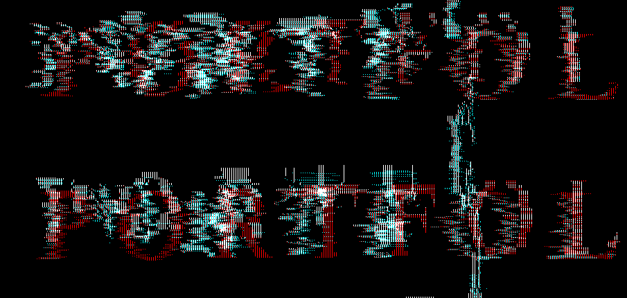
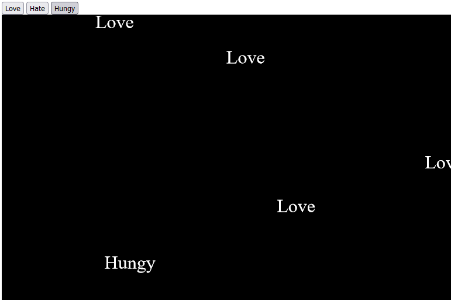
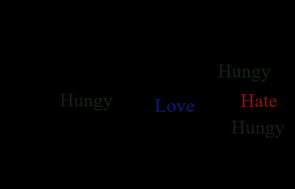
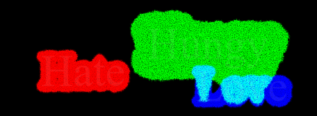
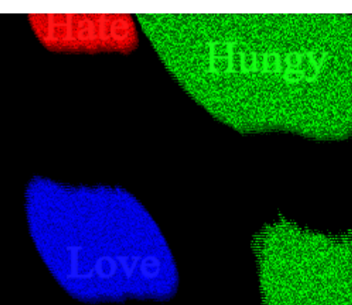
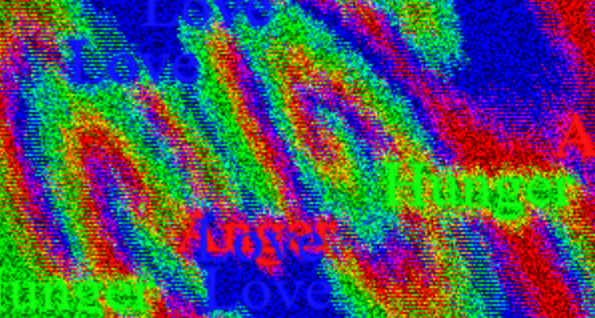

Experiment 6 - Text: Emotional Ecology
Imitate
I was inspired by a piece of code I found by Shylesh Kumar that distorted the color values seperately in the text in text
I wanted to be able to spawn in new text, but quickly learned that the code was not set up to do this easily. The text was being drawn in setup on a new p5 graphic, loaded on to the canvas, then the canvas was edited pixel by pixel in draw. If I wanted to draw new text, I would have to redraw the graphic to the screen, which was causing me a lot of errors
but I figured I'd start by making text first appear on the screen from a button, all the text is redrawn every time new text is added, however I had to disable the text distortion at first
Integrate
I wanted to bring back the text dissapating into the rest of the canvas, so I first added color to the text, and edited the image pixel by pixel to spread the color
the text was fading, however due to some simple issues with my switch statement and how I was drawing the background it didn't work at first. once I fixed those however, I successfully had text that was spreading its color through the canvas
it wasn't dissapating like in the original base code, I liked its almost viral like spreading across the canvas
Innovate
when I started I had originally wanted the text to fully dissapate its color into the rest of the image, but I wanted to explore the viral spread effect more.
I decided to redraw the text every frame, that way it would never fade, and each bit of text would act like source for each color.
I also lowered the pixel density to lessen the lag that comes with editing each pixel
I started fine tuning how each pixel spreads it's color. up till this point each pixel would spread each rgb value in one direction seperately, but this made the canvas gravitate towards one solid white color, consistently increasing the rgb values.
so I made colors also subtract from the other values when spreading, which created a very cool pattern of different colors overtaking and combining with others.
I messed around with this for a while getting different results using different methods of how the pixels interact. But the idea of each color acting like a piece of an ecology, overtaking eachother in a balancing act fit the idea of represeting emotions with the text.
I eventually found my final method where love overtakes anger, which overtakes hunger, which overtakes love, which resulted in a really cool ecology of these emotions mixing and fighting eachother in spiral patterns across the page.
Reflection
working with that original code turned out to be a lot more difficult for what I wanted to do. However, it also led me having to redraw the text multiple times, which become a key part of the final product. I Really liked the end result, looks a lot more interesting then I had initially thought it would. the constantly shifting nature of the colors is really fun to just stare at.
fine tuning the color interaction was really fun and I almost went with another version that created the stagnating crevices between the colors, but shfting spirals that came in the end were just too cool to pass up.